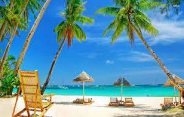

>
TOURISM:
The state of Goa, in India, is famous for its beaches and places of worship. Tourism is its primary industry, and is generally focused on the coastal areas of Goa, with decreased tourist activity inland.
In 2019, the domestic tourists arriving to the state of Goa accounted for approximately 7.1 million, while the foreign tourist arrivals accounted for over 0.9 million.
Thus, Tourism forms the backbone of Goa's economy.
FAMOUS PLACES TO VISIT IN GOA :
1.Colva Beach :
One of Goa's most famous beaches, Colva attracts crowds of tourists during high season (mid-November through mid-February) — for good reason. The 2.4-kilometer-long beach in south Goa offers an endless array of aquatic adventure sports (including jet skiing, banana boat rides, and parasailing), sand that's as soft and as white as baby powder, and a well-developed tourism infrastructure that can cater to your every need.
2.Dona Paula Beach:
Dona Paula Beach is one of the best beaches in Goa for honeymoon tourists. Nicknamed "Lovers' Paradise," this coastal destination in the suburbs of Panaji even has its own love legend.
The tale is about Dona Paula, the daughter of a Portuguese viceroy, who threw herself into the Arabian Sea after her father forbade her from seeing a Goan fisherman who had stolen her heart. The viceroy was so saddened by the loss of his young daughter that he named this entire beautiful area after her, and treated it as a tribute to eternal romance.
3.Basilica of Bom Jesus: The Basilica of Bom Jesus is a Roman Catholic Church located in Old Goa and stands to be the oldest Church of Goa. It is a UNESCO recognized World Heritage Site.
he church completed its construction in the year 1604 .The church is known to hold the relics of St. Francis Xavier, who was known for his phenomenal insight and therapeutic healing powers.
Even after 400 years of burial, the remains are said to be in good condition and are taken out every decade. It is, in fact, one of the Seven Wonders of the World of Portuguese origin.
4.Aguada Fort: Aguada is a Portuguese word which means “Water" so basically this Fort was renowned as the biggest water reservoir in Asia. As you will visit the campus of Aguada Fort you can easily remember the scenes by several Bollywood movies which were shot here.
This fort was built by the Portuguese rulers and has beautiful Italian design carved on the walls.You can also see the gunpowder room in the upper fort and it is said that earlier there were 200 cannons installed for the defence of locals.
5.SORO :The Village Pub, Goa:Established in 2015, by the owners of the SinQ club, this pub with its rustic ambience attracts both local as well as global crowd. To have the best experience, you can drop in on Thursdays, Fridays or Saturdays.
6.HIVRE WATERFALLS:Paradisiacal Marvel:As one of the popular waterfalls in Valpoi Goa. Hivre Waterfalls attract not only nature lovers and tourist, but also hard core trekkers.
7. Dudhsagar Waterfalls: Most Popular One:Originating from the Mandovi River, Dudhsagar falls is incontestably one of the most beautiful waterfalls in India. Plunging down from a height of 130 m, right along the Goa Karnataka border, this stunning four tier waterfall fascinates tourist with the beauty of its foamy and milky water, gushing sound, and surrounding greenery.
8. Mangeshi Temple :Shri Mangesh Temple is located in the Mangeshi Village of Priol in Ponda Taluka of Goa. This is a famous and famous temple. This temple is considered to be one of the largest and one of the best places to visit in Goa. This is an excellent sanctuary, devoted to Lord Shiva. It is a very old temple ruled by the Mangeshi tribe in the 18th century. It is periodically rehabilitated and renovated.
9.Deltin Royale Casino: :Deltin Royale is one of the largest gaming and entertainment destinations in Asia where you can enjoy the royal experience. It offers an exceptional gaming experience, live entertainment, and world-class food. Presented by Deltin Royale Casino Deltin Group. It is one of the famous Goa tourist places which is the first choice destination for most visitors.
Known as a “concert paradise”,
10.Tito’s Club: It is located on Titos Lane in Baga, very close to the coast. It is one of the first discos in Goa which is now very popular. It’s one of the best places to visit in Goa for everyone looking for music, dancing, and good food and drink, and has 3 clubs like Club Titos, Cafe Mambo, and Bollywood Disco.
In 1971, the founder, Mr. Tito Henry de Souza, established a place in Goa to care for domestic and international tourists.
